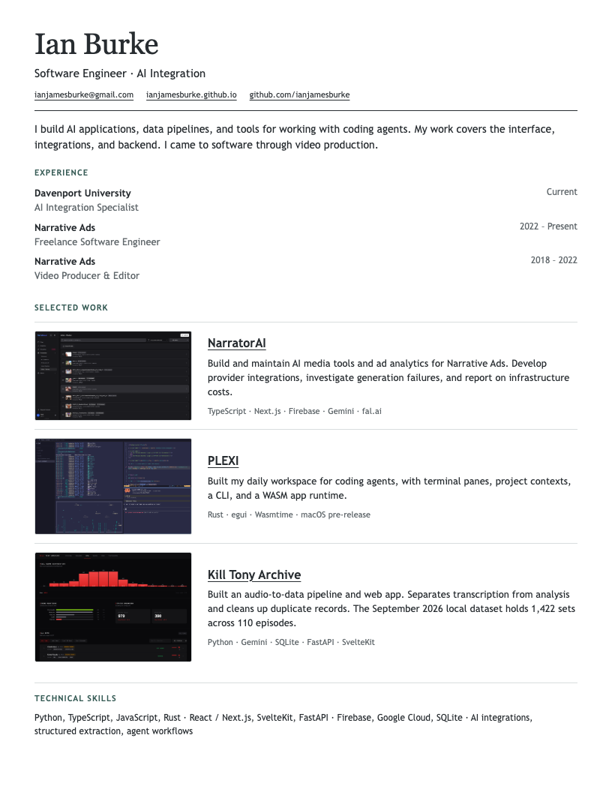
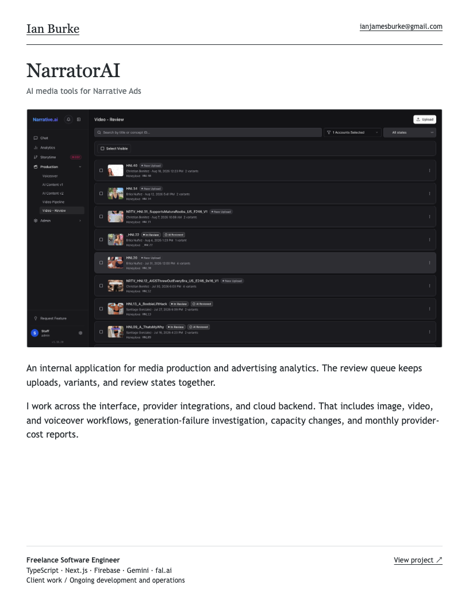
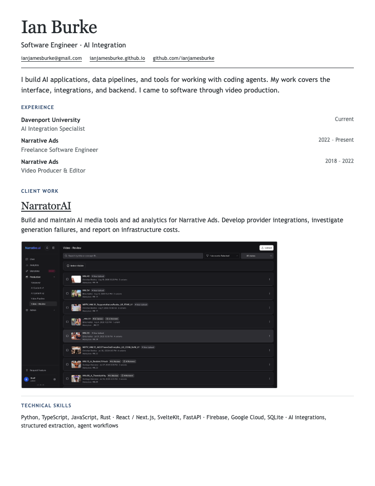

The same work, with different amounts of space. No overlapping screenshots.
1. Compact
One page. Experience first, then three short project entries with small screenshots.

2. Work first
Three pages. One project per page, with a large screenshot and a plain explanation.

3. Balanced
Two pages. Experience and client work first; independent projects get their own page.
